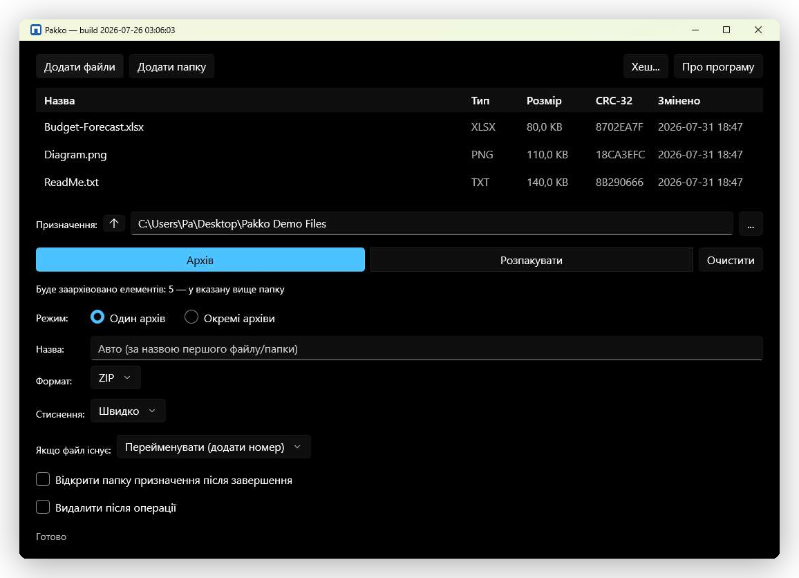

Архіватор для Windows з відкритим кодом
ZIP-інструмент, якому нічого приховувати.
Pakko розпаковує та створює архіви ZIP, TAR, RAR і 7-Zip, використовуючи лише власні
API стиснення Windows та вбудований, ізольований у пісочниці tar.exe —
жодного 7-Zip, WinRAR чи стороннього коду стиснення в застосунку.
Створено для інженерів, які перевіряють ланцюг постачання, дослідників безпеки та всіх, хто не хоче довіряти архіватору, вихідний код якого не можна прочитати.

Сам застосунок — не макет. Та сама збірка, той самий інтерфейс, робота на Windows 11.
Модель довіри
Чому не 7-Zip і не WinRAR?
Обидва — цілком робочі інструменти, це не твердження про перевагу в безпеці. Йдеться
про інший набір залежностей у ланцюгу постачання. Весь стек стиснення Pakko — це або
частина рантайму .NET, або підписаний Microsoft tar.exe: компоненти з
публічним процесом CVE, відтворюваними збірками та слідом спільнотного аудиту, який
вимагають деякі безпеко-орієнтовані середовища — державний сектор, оборона, регульовані
галузі — і з якого може скористатись будь-хто інший.
Мінімальна поверхня атаки
Стиснення працює через System.IO.Compression — жодного стороннього коду 7-Zip, WinRAR чи libarchive у застосунку.
Ізоляція під час розпакування
Архіви RAR, 7-Zip і TAR читаються через підписаний Windows tar.exe, запущений в AppContainer без мережевих можливостей і з обмеженням процесів через Job Object.
Нічого не телефонує додому
Жодної телеметрії, аналітики, звітів про збої чи перевірок оновлень. Pakko не робить жодних мережевих запитів — так само, як і ця сторінка.
Відкритий для аудиту
Apache-2.0, повний код на GitHub. Кожне твердження тут можна перевірити в коді, а не прийняти на віру.
Що зроблено
Що реалізовано
Нижче немає нічого з розряду «плануємо» — кожен пункт уже реалізовано і перевірено на реальному Провіднику Windows, а не лише в тестах.
Формати
- ✓ZIP — читання й запис, через
System.IO.Compression - ✓TAR / GZ / BZ2 / XZ / ZST / LZMA — читання й запис, через
tar.exe - ✓RAR — лише читання, через
tar.exe - ✓7-Zip — лише читання, через
tar.exe
Інтеграція з Windows
- ✓Нативне контекстне меню — Розпакувати, Додати до архіву, Перевірити архів
- ✓Прив'язка типів файлів — одразу відкриває переглядач архівів
- ✓Переглядач архівів — навігація, розпакування вибраного, перегляд файлів
- ✓Мітка Mark-of-the-Web поширюється на кожен розпакований файл
- ✓Адміністративні політики Group Policy / ADMX
Командний рядок
- ✓
pakko.exe— окремий, самодостатній, без встановлення - ✓Команди у стилі 7-Zip —
a/x/t/l - ✓Кожен реліз супроводжується файлом
SHA256SUMS
Отримати
Завантажити
Дві незалежні збірки з одного релізу на GitHub — оберіть потрібну.
GUI-застосунок (MSIX)
Нативне контекстне меню Провідника, переглядач архівів, іконка в треї. Windows 10 1809+ або Windows 11.
Рання версія: підписана dev-сертифікатом, ще не в Microsoft Store. Для встановлення потрібно спершу довірити цей сертифікат — кроки описані в нотатках релізу.
Командний рядок (pakko.exe)
Самодостатній, без інсталятора, без прав адміністратора. pakko x archive.7z -o .\out
Ті самі команди у стилі 7-Zip, що й вище. Див. повний довідник команд.